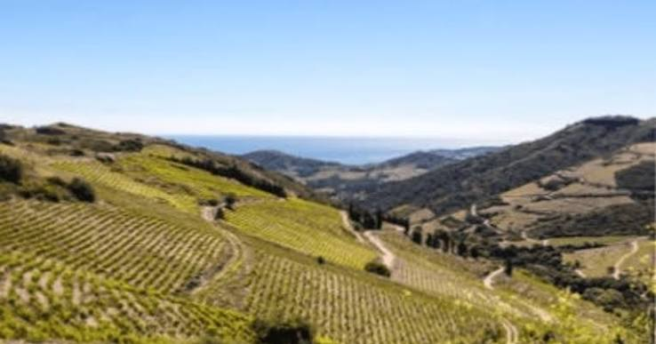

Ratafia &
Vins Doux NaturelsL'art catalan de la liqueur et du mutage


⟹ Noix vertes, grenache et soleil du Roussillon ⟸
Le Roussillon doit sa tradition de vins doux naturels à une technique mise au point au XIIIe siècle par Arnaud de Villeneuve, médecin catalan : le mutage, qui consiste à ajouter de l'alcool vinique au moût en cours de fermentation. Ce geste stoppe la fermentation, préserve une partie du sucre naturel du raisin et stabilise le vin. Sur les terrasses de Banyuls comme dans les vignes de Maury ou de Rivesaltes, cette méthode a façonné des vins parmi les plus réputés du sud de la France.

À côté des vins mutés, le Roussillon partage avec l'ensemble du monde catalan, de part et d'autre des Pyrénées, une autre tradition d'alcool aromatisé : le ratafia. Dans les mas catalans, on prépare cette liqueur familiale par macération de noix vertes, cueillies encore tendres autour de la Saint-Jean, avec des herbes et des épices dont la formule, jalousement gardée, se transmet de génération en génération.
Les vins doux naturels du Roussillon se distinguent enfin par deux méthodes d'élevage bien particulières : l'élevage réducteur, à l'abri de l'air dans des fûts fermés, qui préserve la fraîcheur du fruit, et l'élevage oxydatif, pratiqué en dames-jeannes de verre exposées en plein air, qui développe des arômes de fruits secs, de miel et d'épices sous le soleil et les embruns pyrénéens.
Le ratafia ne s'achète pas vraiment : il se prépare en famille, une formule transmise comme un secret de maison.
— Tradition familiale catalaneLe Roussillon concentre à lui seul l'essentiel de la production française de vins doux naturels, faisant de ces vins mutés un pilier de l'identité viticole catalane, entre coteaux de schiste noir et terrasses tournées vers la mer.
Le ratafia, lui, reste avant tout une affaire de famille : chaque mas catalan conserve sa propre recette, parfois transmise depuis plusieurs générations, préparée à la maison bien plus souvent qu'elle n'est vendue en boutique. Cave coopératives et caveaux de dégustation de Banyuls et de Maury permettent aujourd'hui de découvrir cette double tradition, entre vins mutés et liqueurs artisanales.
Banyuls-sur-Mer ses vignobles en terrasses, taillés à flanc de falaise, offrent l'un des paysages viticoles les plus spectaculaires de la Côte Vermeille.
Maury village adossé à un terroir de schiste noir, réputé pour la puissance de ses vins doux naturels.
Rivesaltes capitale historique du vin doux muscaté, au cœur de la plaine du Roussillon.
Collioure à quelques kilomètres de Banyuls, ce port catalan mêle château royal, ruelles colorées et ateliers de salaison.